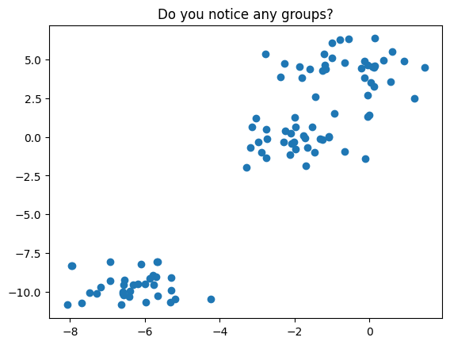
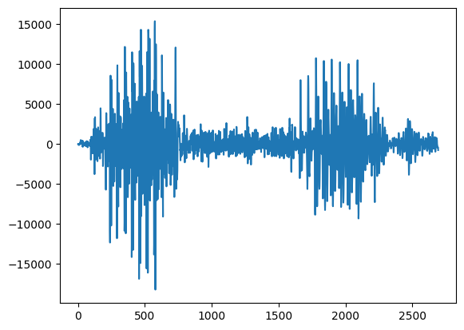
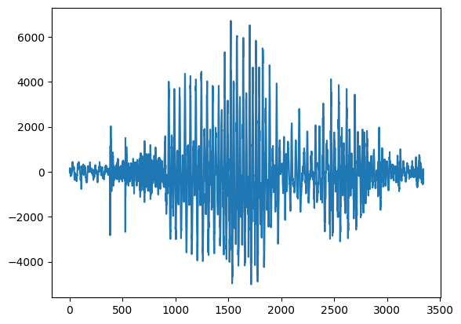
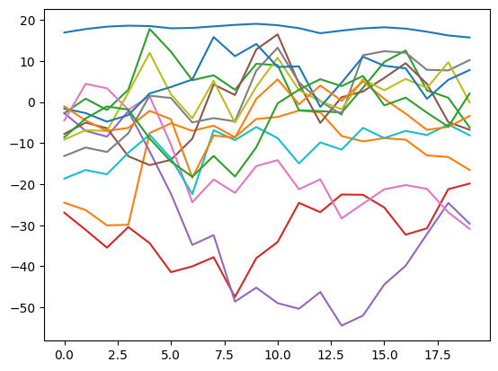

Unsupervised Learning#
OBJECTIVES
Understand unsupervised learning and its difference from supervised learning
Use KMeans and DBSCAN clustering algorithms to cluster data
Extra: Use Hidden Markov Models to Cluster sequential data
Clustering#
import numpy as np
import pandas as pd
import matplotlib.pyplot as plt
import seaborn as sns
from sklearn.datasets import make_blobs
X, _ = make_blobs(random_state=11)
plt.scatter(X[:, 0], X[:, 1])
plt.title('Do you notice any groups?');

There are many clustering algorithms in sklearn – let us use the KMeans and DBSCAN approach to cluster this data.
from sklearn.cluster import KMeans, DBSCAN
from sklearn.preprocessing import StandardScaler
from sklearn.pipeline import Pipeline
Fit the KMeans clustering model to your data.
Evaluating Clusters#
Inertia
Sum of squared differences between each point in a cluster and that cluster’s centroid.
How dense is each cluster?
low inertia = dense cluster ranges from 0 to very high values $\( \sum_{j=0}^{n} (x_j - \mu_i)^2 \)\( where \)\mu_i$ is a cluster centroid
.inertia_ is an attribute of a fitted sklearn’s kmeans object
Silhouette Score
Tells you how much closer data points are to their own clusters than to the nearest neighbor cluster.
How far apart are the clusters?
ranges from -1 to 1 high silhouette score means the clusters are well separated $\(s_i = \frac{b_i - a_i}{max\{a_i, b_i\}}\)$ Where:
\(a_i\) = Cohesion: Mean distance of points within a cluster from each other.
\(b_i\) = Separation: Mean distance from point \(x_i\) to all points in the next nearest cluster.
Use scikit-learn: metrics.silhouette_score(X_scaled, labels).
Higher silhouette score is better!¶
PROBLEM: Customer Segmentation
Using the article here and associated dataset loaded below, your goal is to apply unsupervised learning to a problem in the retail industry. Complete the form here as you work through the problem.
pip install ucimlrepo
Requirement already satisfied: ucimlrepo in /Library/Frameworks/Python.framework/Versions/3.12/lib/python3.12/site-packages (0.0.7)
Requirement already satisfied: pandas>=1.0.0 in /Library/Frameworks/Python.framework/Versions/3.12/lib/python3.12/site-packages (from ucimlrepo) (2.3.3)
Requirement already satisfied: certifi>=2020.12.5 in /Library/Frameworks/Python.framework/Versions/3.12/lib/python3.12/site-packages (from ucimlrepo) (2024.8.30)
Requirement already satisfied: numpy>=1.26.0 in /Library/Frameworks/Python.framework/Versions/3.12/lib/python3.12/site-packages (from pandas>=1.0.0->ucimlrepo) (1.26.4)
Requirement already satisfied: python-dateutil>=2.8.2 in /Library/Frameworks/Python.framework/Versions/3.12/lib/python3.12/site-packages (from pandas>=1.0.0->ucimlrepo) (2.8.2)
Requirement already satisfied: pytz>=2020.1 in /Library/Frameworks/Python.framework/Versions/3.12/lib/python3.12/site-packages (from pandas>=1.0.0->ucimlrepo) (2023.3.post1)
Requirement already satisfied: tzdata>=2022.7 in /Library/Frameworks/Python.framework/Versions/3.12/lib/python3.12/site-packages (from pandas>=1.0.0->ucimlrepo) (2023.3)
Requirement already satisfied: six>=1.5 in /Library/Frameworks/Python.framework/Versions/3.12/lib/python3.12/site-packages (from python-dateutil>=2.8.2->pandas>=1.0.0->ucimlrepo) (1.16.0)
[notice] A new release of pip is available: 24.3.1 -> 26.0.1
[notice] To update, run: pip install --upgrade pip
Note: you may need to restart the kernel to use updated packages.
from ucimlrepo import fetch_ucirepo
# online_retail = fetch_ucirepo(id=352)
# X = online_retail.data.features
# X.head()

HMMLearn#
We will use the hmmlearn library to implement our hidden markov model. Here, we use the GaussianHMM class. Depending on the nature of your data you may be interested in a different probability distribution.
HMM Learn: here
#!pip install hmmlearn
from hmmlearn import hmm
#instantiate
model = hmm.GaussianHMM(n_components=3)
#fit
X = btcn['2021':][['Close']]
X.head()
| Close | |
|---|---|
| Date |
model.fit(X)
---------------------------------------------------------------------------
ValueError Traceback (most recent call last)
Cell In[20], line 1
----> 1 model.fit(X)
File /Library/Frameworks/Python.framework/Versions/3.12/lib/python3.12/site-packages/hmmlearn/base.py:475, in _AbstractHMM.fit(self, X, lengths)
453 def fit(self, X, lengths=None):
454 """
455 Estimate model parameters.
456
(...)
473 Returns self.
474 """
--> 475 X = check_array(X)
477 if lengths is None:
478 lengths = np.asarray([X.shape[0]])
File /Library/Frameworks/Python.framework/Versions/3.12/lib/python3.12/site-packages/sklearn/utils/validation.py:1087, in check_array(array, accept_sparse, accept_large_sparse, dtype, order, copy, force_writeable, force_all_finite, ensure_2d, allow_nd, ensure_min_samples, ensure_min_features, estimator, input_name)
1085 n_samples = _num_samples(array)
1086 if n_samples < ensure_min_samples:
-> 1087 raise ValueError(
1088 "Found array with %d sample(s) (shape=%s) while a"
1089 " minimum of %d is required%s."
1090 % (n_samples, array.shape, ensure_min_samples, context)
1091 )
1093 if ensure_min_features > 0 and array.ndim == 2:
1094 n_features = array.shape[1]
ValueError: Found array with 0 sample(s) (shape=(0, 1)) while a minimum of 1 is required.
#predict
model.predict(X)
---------------------------------------------------------------------------
NotFittedError Traceback (most recent call last)
Cell In[18], line 2
1 #predict
----> 2 model.predict(X)
File /Library/Frameworks/Python.framework/Versions/3.12/lib/python3.12/site-packages/hmmlearn/base.py:375, in _AbstractHMM.predict(self, X, lengths)
358 def predict(self, X, lengths=None):
359 """
360 Find most likely state sequence corresponding to ``X``.
361
(...)
373 Labels for each sample from ``X``.
374 """
--> 375 _, state_sequence = self.decode(X, lengths)
376 return state_sequence
File /Library/Frameworks/Python.framework/Versions/3.12/lib/python3.12/site-packages/hmmlearn/base.py:335, in _AbstractHMM.decode(self, X, lengths, algorithm)
300 def decode(self, X, lengths=None, algorithm=None):
301 """
302 Find most likely state sequence corresponding to ``X``.
303
(...)
333 score : Compute the log probability under the model.
334 """
--> 335 check_is_fitted(self, "startprob_")
336 self._check()
338 algorithm = algorithm or self.algorithm
File /Library/Frameworks/Python.framework/Versions/3.12/lib/python3.12/site-packages/sklearn/utils/validation.py:1661, in check_is_fitted(estimator, attributes, msg, all_or_any)
1658 raise TypeError("%s is not an estimator instance." % (estimator))
1660 if not _is_fitted(estimator, attributes, all_or_any):
-> 1661 raise NotFittedError(msg % {"name": type(estimator).__name__})
NotFittedError: This GaussianHMM instance is not fitted yet. Call 'fit' with appropriate arguments before using this estimator.
#look at our predictions
plt.plot(model.predict(X))
---------------------------------------------------------------------------
NotFittedError Traceback (most recent call last)
Cell In[19], line 2
1 #look at our predictions
----> 2 plt.plot(model.predict(X))
File /Library/Frameworks/Python.framework/Versions/3.12/lib/python3.12/site-packages/hmmlearn/base.py:375, in _AbstractHMM.predict(self, X, lengths)
358 def predict(self, X, lengths=None):
359 """
360 Find most likely state sequence corresponding to ``X``.
361
(...)
373 Labels for each sample from ``X``.
374 """
--> 375 _, state_sequence = self.decode(X, lengths)
376 return state_sequence
File /Library/Frameworks/Python.framework/Versions/3.12/lib/python3.12/site-packages/hmmlearn/base.py:335, in _AbstractHMM.decode(self, X, lengths, algorithm)
300 def decode(self, X, lengths=None, algorithm=None):
301 """
302 Find most likely state sequence corresponding to ``X``.
303
(...)
333 score : Compute the log probability under the model.
334 """
--> 335 check_is_fitted(self, "startprob_")
336 self._check()
338 algorithm = algorithm or self.algorithm
File /Library/Frameworks/Python.framework/Versions/3.12/lib/python3.12/site-packages/sklearn/utils/validation.py:1661, in check_is_fitted(estimator, attributes, msg, all_or_any)
1658 raise TypeError("%s is not an estimator instance." % (estimator))
1660 if not _is_fitted(estimator, attributes, all_or_any):
-> 1661 raise NotFittedError(msg % {"name": type(estimator).__name__})
NotFittedError: This GaussianHMM instance is not fitted yet. Call 'fit' with appropriate arguments before using this estimator.
Extra: Looking at Speech Files#
For a deeper dive into HMM’s for speech recognition please see Rabner’s article A tutorial on hidden Markov models and selected applications in speech recognition here.
from scipy.io import wavfile
!ls sounds/apple
apple01.wav apple04.wav apple07.wav apple10.wav apple13.wav
apple02.wav apple05.wav apple08.wav apple11.wav apple14.wav
apple03.wav apple06.wav apple09.wav apple12.wav apple15.wav
#read in the data and structure
rate, apple = wavfile.read('sounds/apple/apple01.wav')
#plot the sound
plt.plot(apple)
[<matplotlib.lines.Line2D at 0x139a27d10>]

#look at another sample
rate, kiwi = wavfile.read('sounds/kiwi/kiwi01.wav')
#kiwi's perhaps
plt.plot(kiwi)
[<matplotlib.lines.Line2D at 0x13b8718b0>]

from IPython.display import Audio
#take a listen to an apple
Audio('sounds/banana/banana02.wav')
Generating Features from Audio: Mel Frequency Cepstral Coefficient#
Big idea here is to extract the important elements that allow us to identify speech. For more info on the MFCC, see here.
!pip install python_speech_features
Requirement already satisfied: python_speech_features in /Library/Frameworks/Python.framework/Versions/3.12/lib/python3.12/site-packages (0.6)
import python_speech_features as features
#extract the mfcc features
mfcc_features = features.mfcc(kiwi)
#plot them
plt.plot(mfcc_features);
#determine our x and y
X = features.mfcc(kiwi)
y = ['kiwi']

import os
#make a custom markov class to return scores
class MakeMarkov:
def __init__(self, n_components = 3):
self.components = n_components
self.model = hmm.GaussianHMM(n_components=self.components)
def fit(self, X):
self.fit_model = self.model.fit(X)
return self.fit_model
def score(self, X):
self.score = self.fit_model.score(X)
return self.score
kiwi_model = MakeMarkov()
kiwi_model.fit(X)
kiwi_model.score(X)
-716.5960110710494
hmm_models = []
labels = []
for file in os.listdir('sounds'):
sounds = os.listdir(f'sounds/{file}')
sound_files = [f'sounds/{file}/{sound}' for sound in sounds]
for sound in sound_files[:-1]:
rate, data = wavfile.read(sound)
X = features.mfcc(data)
mmodel = MakeMarkov()
mmodel.fit(X)
hmm_models.append(mmodel)
labels.append(file)
Model is not converging. Current: -716.5960110683251 is not greater than -716.5960103649421. Delta is -7.033829660940683e-07
Model is not converging. Current: -747.3672269421435 is not greater than -747.3672266158559. Delta is -3.262875907239504e-07
Model is not converging. Current: -893.797647183185 is not greater than -893.7976469118219. Delta is -2.7136309199704556e-07
Model is not converging. Current: -783.244336836378 is not greater than -783.244336643972. Delta is -1.9240599158365512e-07
hmm_models[:3]
[<__main__.MakeMarkov at 0x13b531580>,
<__main__.MakeMarkov at 0x13b4cb2f0>,
<__main__.MakeMarkov at 0x13b530980>]
#write a loop that bops over the files and prints the label based on
#highest score
Making Predictions#
Now that we have our models, given a new sound we want to score these based on what we’ve learned and select the most likely example.
in_files = ['sounds/pineapple/pineapple15.wav',
'sounds/orange/orange15.wav',
'sounds/apple/apple15.wav',
'sounds/kiwi/kiwi15.wav']
scores = []
for model in hmm_models:
rate, data = wavfile.read(in_files[0])
X = features.mfcc(data)
# print(model.score(X))
scores.append(model.score(X))
scores[:10]
[-2558.6428349055427,
-2323.421581745123,
-3096.5354762446377,
-2012.4235454294576,
-2583.204668338286,
-2524.256633898634,
-2034.4415383269575,
-1876.7069048956384,
-2647.9744115635535,
-2025.0155441234654]
scores.index(max(scores))
61
labels[61]
'pineapple'
len(labels)
98
Further Reading#
Textbook: Marsland’s Machine Learning: An Algorithmic Perspective has a great overview of HMM’s.
Time Series Examples: Checkout Aileen Nielsen’s tutorial from SciPy 2019 and her book Practical Time Series Analysis
Speech Recognition: Rabiner’s A tutorial on hidden Markov models and selected applications in speech recognition
HMM’s and Dynamic Programming: Avik Das’ PyData Talk Dynamic Programming for Machine Learning: Hidden Markov Models